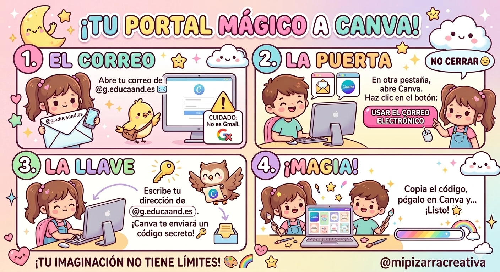

Texto
Misión 2: Artistas del Diseño (Creación Digital)
¡Llegó el momento de la magia! En esta etapa trabajaremos en parejas para transformar toda la información que habéis rescatado en una obra de arte digital. Es el momento de demostrar vuestro talento y vuestro dominio del ordenador.
Paso 1: Acceso Seguro con G.EducaAnd
Para que vuestro diseño se guarde y podamos trabajar de forma profesional, debemos entrar en nuestro estudio virtual usando vuestra identidad digital oficial.
Entrad en Canva y pulsa en el botón "Iniciar sesión".
Seleccionad "Continuar con Google".
Escribid vuestro correo: Recordad que debe ser el de @g.educaand.es. ¡Ojo con los puntos y la @ en el teclado físico!.
Validación: Seguid el flujo de "Correo-Código" para entrar de forma autónoma.

Paso 2: Manos a la obra en el lienzo
Una vez dentro, vuestro objetivo es diseñar una infografía o biografía visual que sea impactante y creativa.
¿Qué haremos?: Usaremos la interfaz de "arrastrar y soltar" de Canva para colocar títulos, fotos y datos clave.
Reto técnico: Practicaremos la escritura correcta con el teclado (mayúsculas, tildes y signos de puntuación).
Apoyo especial: Si os quedáis "atascados" con alguna herramienta, avisad a los Mentores Digitales de la clase.
Tiempo: Tenemos 2 sesiones (120 minutos) de pura creatividad.
Recuerda...
Estamos creando un contenido original y transformador. Aseguraos de que vuestro diseño refleje bien la valentía y los logros de vuestra mujer referente.